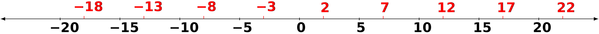

Haskell Road; Getting Started Part 2

Getting started part 2
Monday at the library part 2
Breaktime
The von der Surwitzes pop over to the student center cafe for a break. They grab a large mineral water, a brand they knew in Germany, and Ute has packed some Vollkornbrot sandwiches of hummus and cucumber. They sit at a table and pour the water and pass around out the sandwiches.
𝔘𝔱𝔢: All right, so I
emailed the professor about a couple of questions from that first
chapter of The Haskell Road, and she replied saying, first, she’s
happy we’re tackling the material early. And she mentioned some
resources — a collection of texts she has on reserve at the
library.
𝔘𝔴𝔢: Sort of like, I’m
not going to give you the answers. I’m going to point you in the right
direction.
[murmurs of acknowledgement]
𝔘𝔯𝔰𝔲𝔩𝔞: What books are
they?
𝔘𝔱𝔢: Math. Upper level
college texts. Abstract algebra and number theory, mainly.
[silence]
𝔘𝔴𝔢: I getting the
general impression that computer science has all these higher math
concepts, but then you don’t go as far as a math major does.
[silence, eating and drinking]
𝔘𝔴𝔢: [continuing] I
guess you’re just supposed to learn as much as you can. But like she
said at the open house, computer science is a lot of applied
mathematics.
[murmurs of agreement]
𝔘𝔯𝔰𝔲𝔩𝔞: And the math is
the hardest part for incoming CS students, those first four
semesters. And that’s why we’re emphasizing the math in this
course.
[nods of agreement then silence as they eat and drink]
𝔘𝔯𝔰𝔲𝔩𝔞: [continuing]
Not so much hand-waving. And she doesn’t have set in stone what she
wants us to get through. The course is open-ended. Wow, I just find
that amazing.
[murmurs of agreement]
𝔘𝔴𝔢: But I’m sure we’ll
need to keep moving and not be laggards about it. We’re high
schoolers, true, but this is like a super-AP course that’s exclusively
college-level material.
𝔘𝔱𝔢: And that’s because
so much of the first year or so of a college comp-sci curriculum
really could and should be taught at the high school level. That’s her
theory — and we’re her Versuchskaninchen
Versuchskaninchen: test rabbit \(\simeq\) guinea pig.
?
[murmurs of agreement]
𝔘𝔯𝔰𝔲𝔩𝔞: A whole year,
the whole school year. Her sabbatical ends next summer, but I’m
pretty sure I’ll want to continue. I don’t know if I want to be a
computer scientist or software engineer, but learning this can’t
hurt.
𝔘𝔱𝔢: I guess you could
say Novalis is sort of an open Gynmasium.
[soft laughter]
𝔘𝔴𝔢: And what happens
afterward? They definitely want you to just keep going at the U. Which
I wouldn’t mind at all.
[looks about the table]
𝔘𝔱𝔢: Yes, and lots of
people just drift into a half-and-half situation where there taking
courses over at the U.
𝔘𝔯𝔰𝔲𝔩𝔞: Well, Father
has tenure now. But I don’t know if Mutti can go on working from
here. [shrugging and sighing] Anyway, I guess you two will cross that
bridge before I will.
𝔘𝔱𝔢: [laughing] Hardly!
You’re right there with us in everything we’re doing this coming year.
Divided by
Back at the library study room they’ve checked out the reserved books and are looking through sections of those that deal with the basic theory of division.
𝔘𝔱𝔢: [reading from the
Divisibility section of Proofs, A Long-Form Mathematical
Textbook
Proofs; A Long-Form Mathematics Textbook by Jay Cummings
] All right, so Professor Chandra wants us to
understand divisibility before we go to greatest common divisor, and
before we talk about primes. She said, You have to know all of the
implications of “divided by” before you can advance. And like it’s
saying in here, [reading] you could just say, \(a\) divides \(b\) if
\(\frac{a}{b}\) produces an integer.
[Ursula and Uwe read the section from a second copy]
𝔘𝔱𝔢: [continuing] But
we don’t want that definition, we want this definition [writing on
the board]
𝔘𝔱𝔢: [continuing] The
symbol \(a \mid b\:\) means \(a\) divides \(b\) for some \(k\) where \(b = a \cdot
k\;\) and \(a\) is not equal to zero. [pausing] Right, all that makes
sense. So basically, this turns the whole question of divisibility
into finding a proper integer value for \(k\:\) to multiply with. Now
we have a mathy formalist way of seeing divisibility.
[murmurs of approval]
𝔘𝔴𝔢: I like how he says
good definitions don’t just fall out of the sky.
[murmurs of agreement]
𝔘𝔯𝔰𝔲𝔩𝔞: Then the
examples, like \(2 \mid 14\) is true because \(14 = 2 \cdot 7\:\), in other
words we’ve found a whole number integer, \(k = 7\), and we’re happy.
𝔘𝔱𝔢: Again, we’ve
turned division into an issue of true-false logic and
multiplication. [writing on the board] So \(7 \mid 23\) doesn’t work
because we have no solution for \(7 \cdot k = 23\).
𝔘𝔴𝔢: And look at that
last one where it’s \(a \mid 0\;\). That’s true, for a non-zero \(a\)
since we can say \(0 = a \cdot 0\) is always true for any \(a\) as long as \(k
= 0\;\).
[murmurs of agreement]
𝔘𝔯𝔰𝔲𝔩𝔞: So for [writing
on the board] \(a \mid b\), we can say \(a\) is a divisor of \(b\), and
\(b\) is a multiple of \(a\), and \(b\) is divisible by \(a\).
[murmurs of agreement]
𝔘𝔱𝔢: So they want us to
understand that we’re not supposed to see \(2 \mid 14\) and just say it
equals \(7\). It’s not supposed to be seen as a calculation, it’s a
logic expression that’s true or false — for some value \(k\:\).
𝔘𝔴𝔢: Right. We’re in
the world of logic now, not grade school arithmetic. So everything has
to be reexplained and reworked.
[murmurs of agreement]
𝔘𝔱𝔢: All right, so in
this book
A Computational Introduction To Number Theory and Algebra by
Victor Shoup; &shoup2009computational.
}
they have a theorem about divisibility. [writing on
the board]
- \(a \mid a\), \(1 \mid a\), and \(a \mid 0\);
- \(0 \mid a \iff a = 0\);
- \(a \mid b \iff -a \mid b \iff a \mid -b\);
- \(a \mid b \land a \mid c \implies a \mid (b + c)\);
- \(a \mid b \land b \mid c \implies a \mid c\)
𝔘𝔱𝔢: Good, now he’s talking about the transitive property of divisibility. It is a proposition, which is a type of theorem, and that means it comes with a proof. [writing on the board] Here it is in the compact math logic form
\begin{align*} a, b, c \in \mathbb{Z},\;\; a \mid b \;\land\; b \mid c \implies a \mid c \end{align*}𝔘𝔱𝔢: [continuing] And then he goes on to prove it by saying assume the if part, the \(a \mid b \;\land\; b \mid c\:\) part is true, that means the then part, the \(a \mid c\) part is true. So [writing]
\begin{align*} b &= a \cdot s \\[.4em] c &= b \cdot t \end{align*}𝔘𝔱𝔢: [continuing] for some integers \(s\) and \(t\;\). And now [writing]
\begin{align*} c &= b \cdot t \\[.4em] &= (a \cdot s) \cdot t \\[.4em] &= a \cdot (s \cdot t) \quad\quad \ldots \; \text{associativity} \end{align*}
𝔘𝔱𝔢: [continuing] So
since we have the form \(c = a \cdot (s \cdot t)\) where we assumed \(s\) and \(t\)
are integers, and that’s the basic form of divisibility, so yes, \(a
\mid c\) since we’ve shown \(c = a \cdot k\) where \(k = (s \cdot t)\:\).
𝔘𝔯𝔰𝔲𝔩𝔞: Good. Let’s
switch over to this other book [she picks up a Springer Verlag
book
The Whole Truth About Whole Numbers by Sylvia Forman and
Agnes M. Rash;
and pages through it] Ah, in this book there’s a section
called Divisors and the Greatest Common Divisor. [paging to section,
reading] Oh, here’s one, Determine whether true or false [writing on
the board]
𝔘𝔴𝔢: Interesting. So writing it in the divisibility way [gets up and writes on the board]
\begin{align*} (6n + 4) = 2k \end{align*}𝔘𝔴𝔢: So before we freak out and get lost, let’s just notice that [writing]
\begin{align} 2(3n + 4) &= 2k \\[.4em] 3n + 4 &= k \end{align}
𝔘𝔴𝔢: [continuing] I’d
say we don’t need to go any further with this. \(2 \mid (6n + 4)\) is
true — which means it’s got solutions — because \(2\) will go into
\((6n + 4)\) for whatever \(n\) wants to be.
𝔘𝔱𝔢: And this whole
formal divisibility thing helps because if you just saw this one day
[writing on the board]
𝔘𝔱𝔢: [continuing]
you’ve now got a second way to see the idea that the equation is true
for any \(n\), that it’s dependent on \(n\;\).
𝔘𝔯𝔰𝔲𝔩𝔞: [looking
ironically] Thanks, Uwe, Ute, for keeping it real.
[laughter]
𝔘𝔱𝔢: [reading text] All
right, we have this example [writing on board]
𝔘𝔱𝔢: [continuing] which
is false because there can’t be any \(k\) where \(k \cdot 0\) equals
\(11\;\). Agreed?
[nods of agreement]
𝔘𝔱𝔢: [continuing] All
right, how about this?
Prove that if \(\,a \mid b\) then \(-\, a \mid b\)
𝔘𝔯𝔰𝔲𝔩𝔞: Let’s just logic it out [getting up and writing on the board]
\begin{align*} b & = a \cdot k \\[.4em] b &= (-a) \cdot (-k) \\[.4em] b &= - (a) \cdot (k) \\[.4em] b &= - a \cdot k \end{align*}then
\begin{align*} - a \mid b \quad \text{for some}\; k \in \mathbb{Z} \end{align*}
𝔘𝔯𝔰𝔲𝔩𝔞: [continuing] So
\(k\) by virtue of being an integer, which can be either positive or
negative, we’ve derived \(-\, a \mid b\) from \(a \mid b\;\).
[silence while the others study the board]
𝔘𝔴𝔢: Hold it. I’m not
sure we’ve got the spirit of this, quite.
𝔘𝔯𝔰𝔲𝔩𝔞: How so?
𝔘𝔴𝔢: [going to the
board] We need to make sure we understand this as [writing] \((-a) \mid
b\;\) and not as \(-(a \mid b)\:\), right?
[murmurs of agreement]
𝔘𝔴𝔢: So that means
we’ve got [writing] \(b = (-a)(-k)\) as the only possible solution to
keep that \(b\) positive. And I don’t think you meant to factor out
\(-1\:\) like you did. So \(k\) must be negative to go with the \(-a\:\),
which then gives positive \(b\;\). That’s what is meant, I think. Yes,
\(k\) being an integer allows this. But again, we’re dealing with a
multiplicative relationship, we’re not doing division. And I’m sure
we’ll find out why this is so important in a while.
𝔘𝔯𝔰𝔲𝔩𝔞: Oh, I think
that was in here. [pulling a large-format book from her messenger
bag
An Illustrated Theory of Numbers by Martin H. Weissman.
and pages to tabbed page]. Right, and he shows that \(0 \mid
0\:\), that zero divides zero, is true — because [writing on board]
\(0 = 0 \cdot k\:\), meaning \(k\) can be anything and the expression remains
true. [reading further] And he’s calling \(k\) the accessory
number. [reading further] So his wording is the integers \(x\) that
satisfy \(7 \mid x\) are \(x = 7 \cdot k\) — and that will be the arithmetic
progression of the multiples of \(7\:\). They’re evenly
spaced. Good. And there’s this [going to the board and writing]
Plot the integers \(x\) which satisfy \(5 \mid (x - 2)\)
𝔘𝔱𝔢: [going to the board and writing] So if that’s to be true then we’ve got \(x - 2 = 5k\:\), and that means for the multiples of \(5\:\), the set of integers \(x\) must keep \(x - 2\) multiples of \(5\) also. So for example
\begin{align*} -3 - 2 &= 5 \cdot -1 \\[.4em] 2 - 2 &= 5 \cdot 0 \\[.4em] 7 - 2 &= 5 \cdot 1 \\[.4em] 12 - 2 &= 5 \cdot 2 \\[.4em] \ldots \end{align*}𝔘𝔱𝔢: [continuing] And the so-called geometric view of this set of \(x\)’s would be a number line with points [drawing on the board]
 Divisibility number line where x-2 must be a multiple of 5
𝔘𝔱𝔢: [continuing] Which
is to say, \(x\) is two more than a multiple of \(5\:\).
𝔘𝔯𝔰𝔲𝔩𝔞: Okay, next one
[writing on the board]
Plot the integers \(x\) which satisfy \(x \mid 12\:\).
𝔘𝔯𝔰𝔲𝔩𝔞: [continuing
writing] So that means \(12 = x \cdot k\) where \(k\) will just be the
integers.
𝔘𝔴𝔢: Again, I would say
we shouldn’t read too much into this. The basic fact is [going to the
board and writing] we have the set of integers that divide \(12\)
𝔘𝔴𝔢: And however that
works out with \(x \cdot k\) is incidental, since whatever \(x\) and \(k\) need
to be, their product has to be in this [point at (5)] set.
[murmurs of agreement]
𝔘𝔯𝔰𝔲𝔩𝔞: I’ll draw that
quickly [drawing number line]
𝔘𝔯𝔰𝔲𝔩𝔞: All right, Weissman deals with transitive again. But before that he talks about reflexive and antisymmetric in relation to divisibility. [writing on the board]
For every integer \(x\), \(x \mid x\)
[smiles of ironic mute astonishment]
𝔘𝔯𝔰𝔲𝔩𝔞: [continuing] So
this is showing us the reflexivity of divisibility \(\mid\:\). Then he
says in the margin, Every integer is a multiple of itself. And then
he has [writing on board] \(x = x \cdot 1\)
[silence]
𝔘𝔱𝔢: [reading from her
laptop] According to Wikipedia, a reflexive relation is a binary
relation — or let’s say a binary operator — on a set \(X\) that
“relates” an element of \(X\) to itself.
[silence]
𝔘𝔴𝔢: [reading his
laptop] I’m on the Encyclopedia of Mathematics site
See The Encyclopedia of Mathematics.
for
reflexivity
Reflexivity; Encyclopedia of Mathematics.
and it talks about it in terms of relations as
well. But we don’t want to really unpack the whole Cartesian product,
relations, functions thing yet do we, no.
[murmurs of agreement]
𝔘𝔴𝔢: It says a relation
is reflexive if it contains the diagonal or identity relation
[writing on the board] \(\{(a,a) : a \in A\}\) for set \(A\:\).
𝔘𝔯𝔰𝔲𝔩𝔞: So if that
\((a,a)\) is seen as just a coordinate pair on a regular Cartesian
coordinate plane, [drawing a graph on the board] then yes, it’s just
points on the diagonal
[silence]
𝔘𝔴𝔢: So without getting
too lost in the details, reflexive means things are related somehow to
themselves. So equality would work, even greater than or equal, and
less than or equal since the equal part is true. So for example, all
integers are greater than or equal to themselves. [gives ironic
look] Well, it’s true.
[laughter]
𝔘𝔱𝔢: Antisymmetric is next?
𝔘𝔯𝔰𝔲𝔩𝔞: Right. And I’d
like to understand what symmetric means first — just to get very
confused.
[laughter, then all searching on their laptops]
𝔘𝔴𝔢: Again, we’re
looking for symmetric relation.
[murmurs of agreement]
𝔘𝔱𝔢: Okay, Wikipedia
says a symmetric relation is basically, as I paraphrase it, a
situation where if \(a = b\) is true, then \(b = a\) is also true [writing
on the board]
𝔘𝔱𝔢: [continuing] And
the \(aRb\) means \(a\) and \(b\) are in a relationship. And then examples
might be we’re in symmetric relationships with each other because
we’re all blood siblings to each other. So you Ursula are my sibling,
and I am your sibling.
𝔘𝔯𝔰𝔲𝔩𝔞: Right, but
blood sibling is not reflexive, it’s irreflexive because you can’t
be called a sibling of yourself. But then a number can be a multiple
of itself — \(1\) times itself — and we established that as
reflexive; but I’m not my own sibling.
[murmurs of agreement].
𝔘𝔴𝔢: So in a round
robin binary way, we share the same parents. That’s symmetric, but
it’s not reflexive, is it? You can’t share a parent with yourself, can
you?
[silence]
𝔘𝔯𝔰𝔲𝔩𝔞: If it were
worded my mother is my mother or my father is my father, it’s the
same as saying \(a\) is equal to \(a\), isn’t it? So the wording “parent
in common with myself” is misleading, because we’re not relating me
and my parent directly, we’re relating the parent to that same parent
by means of me as the joiner. Does that make sense? It’s in the basic
spirit of a binary relation that relates an element to itself.
[half-hearted murmurs of agreement and ironic smirking]
𝔘𝔱𝔢: And then we’ve
said the equals relation is reflexive and symmetric, right? Do we
want to say this, really?
𝔘𝔯𝔰𝔲𝔩𝔞: Sure, why not?
You know, so often I learn the “official” way, the accepted answer —
and then I talk myself into believing it.
[laughter]
𝔘𝔱𝔢: Are we ready to
tackle antisymmetry?
[eager murmurs of agreement]
𝔘𝔱𝔢: Okay, I’ve
searched on antisymmetry and gone to a Wolfram MathWorld page
Antisymmetric Relation.
that says [reading]
A relation \(R\) on a set \(S\) is antisymmetric provided that distinct elements are never both related to one another. In other words \(xRy\) and \(yRx\) together imply that \(x = y\:\).
𝔘𝔱𝔢: [continuing] And then from the Wikipedia article [going to the board and writing]
If \(aRb\) with \(a \ne b\) then \(bRa\) must not hold.
𝔘𝔯𝔰𝔲𝔩𝔞: Good. So now Weissman says [writing on the board]
For integers \(x\), \(y\), if \(x \mid y\) and \(y \mid x\), then \(x = \pm y\:\).
𝔘𝔯𝔰𝔲𝔩𝔞: [continuing] And then he shows it by saying [writing on the board]
\begin{align*} \text{if}\;\;y &= mx \quad \text{and} \\[.5em] x &= ny \quad \text {for some integers}\;\; x, y \end{align*}𝔘𝔯𝔰𝔲𝔩𝔞: [continuing] And then we can say [writing]
\begin{align} x = ny = n(mx) = (nm)x \end{align}𝔘𝔯𝔰𝔲𝔩𝔞: [continuing] And now if we say \(x \ne 0\) we can divide this [pointing to (6)] by \(x\:\) [writing on board]
\begin{align*} \frac{x}{x} &= \frac{ny}{x} = \frac{n(mx)}{x} = \frac{(nm)x}{x} \\[.5em] 1 &= \frac{ny}{x} = nm = nm \end{align*}𝔘𝔯𝔰𝔲𝔩𝔞: [continuing] So multiplying by a number is the same as dividing by its reciprocal — and vice versa. And now we have a reciprocal relationship between \(n\) and \(m\) since two numbers multiplied equaling \(1\) means they must be reciprocals of each other [writing on the board]
\begin{align*} 1 &= nm \\[.5em] \frac{1}{m} &= n \\[.5em] \frac{1}{n} &= m \end{align*}𝔘𝔯𝔰𝔲𝔩𝔞: [continuing, writing on the board] But as he’s saying, \(\frac{1}{m}\) and \(\frac{1}{n}\) cannot be anything but \(1\) and still be integers, so it’s proven that \(n = m = \pm1\:\) So subbing into [points to (6)]
\begin{align*} x &= ny \\[.5em] x &= (\pm1)y \end{align*}
𝔘𝔴𝔢: Which is, again,
showing us that division is not ever going to be symmetric unless
we’re just talking about an integer dividing itself, basically —
that is, plus or minus itself.
[murmurs of agreement]
𝔘𝔯𝔰𝔲𝔩𝔞: [looking at the
Weissman text] So then he does transitivity with divisibility, and
it’s the same as we did before. Then he does [writing on the board]
𝔘𝔯𝔰𝔲𝔩𝔞: There’s his proof, that is [writing on the board]
\begin{align*} x &= md \\[.5em] xy &= (md)y \quad \text{(multiply both sides by $y$)} \\[.5em] xy &= (my)d \end{align*}
𝔘𝔯𝔰𝔲𝔩𝔞: So \(xy\) is a
multiple of \(d\), that multiple being \((my)\). Okay?
[murmurs of agreement]
𝔘𝔯𝔰𝔲𝔩𝔞: Next, is this
one [writing on the board]
If \(d \mid x\) and \(d \mid y\), then \(d \mid (x + y)\) and \(d \mid (x - y)\).
𝔘𝔯𝔰𝔲𝔩𝔞: [continuing] And the proof is we can say [writing on board] for \(x = md\) and \(y = nd\) for integers \(m\) and \(n\)
\begin{align*} x \pm y = (md) \pm (nd) = (m \pm n)d \end{align*}𝔘𝔯𝔰𝔲𝔩𝔞: [continuing] And this shows that \(x \pm y\) is a multiple of \(d\). [reading further in the Weissman text] Then he gives a variation on this idea, which he calls the two out of three principle for divisibility. [writing on the board]
Let \(a\),\(b\),\(c\) be integers satisfying the equation \(a + b = c\). Let \(d\) bye an integer. If two of the set \(\{a,b,c\}\) are multiples of \(d\), then the third number must also be a multiple of \(d\).
[silence]
𝔘𝔱𝔢: This is just the
previous one reworded, right? The basic situation [writing on the
board] \(a + b = c\) can be rearranged into \(a = c - b\) or \(b = c -
a\). So whichever two you have as multiples of \(d\), we add or subtract
them to get the third, and that’s covered by \(d \mid (x \pm y)\).
[soft murmurs of agreement]
𝔘𝔯𝔰𝔲𝔩𝔞: This
demonstrates two-out-of-three [reading from
the text and copying on the board]
Demonstrate that \(2\,999\,997\) is a multiple of \(3\).
𝔘𝔴𝔢: Okay, my turn. [going to the board and writing] Since \(3\,000\,000 - 3 = 2\,999\,997\), we know because of the two-out-of-three principle Uwe uses the \(\therefore\) which is the symbol for therefore.
\begin{align*} 3 &\mid 3\,000\,000 \quad &\text{(first known)}\\[.5em] 3 &\mid 3 \quad &\text{(second known)} \\[.5em] \therefore \;\; 3 &\mid (3\,000\,000 - 3) \end{align*}
𝔘𝔱𝔢: Exactly. We knew
two were divisible by \(d\), so those two added or subtracted from one
another we could know as well. Good.
[murmurs of satisfaction]
𝔘𝔴𝔢: Hey, we’re really
going down this rabbit hole.
𝔘𝔯𝔰𝔲𝔩𝔞: [perusing
Weissman] It’s only one, no, two more exercises, then it goes on to
something else. Let’s do this next one and go back to Cummings.
[murmurs of agreement]
𝔘𝔴𝔢: No matter what,
I’ll never see division the same again.
[laughter]
𝔘𝔱𝔢: Hey, I just
searched on haskell divisibility and a stackoverflow came
up
See Testing divisibility of Ints by 11.
. It basically asks whether an integer is divisible by
\(11\). And then it has some trick about adding and subtracting the
digits of the number, right. But then somebody gives the answer
[writing on the board]
divisibleBy11 x = x `rem` 11 == 0
𝔘𝔯𝔰𝔲𝔩𝔞: I’ll try it [typing into her monitor-connected laptop and running]
divisibleBy11 33
<interactive>:222:1-13: error:
Variable not in scope: divisibleBy11 :: t0 -> t
𝔘𝔯𝔰𝔲𝔩𝔞: I assume that
rem means remainder, as in, Give me the remainder of a division. And
then that’s checked if equal to \(0\).
[murmurs of agreement]
𝔘𝔴𝔢: Again, we’re
getting the true-false nature of divisibility. It’s not just dividing
a number by another. It’s asking yes or no whether a number properly
divides another.
𝔘𝔯𝔰𝔲𝔩𝔞: Okay, here’s
the next problem
Find all integers \(x\) which satisfy \(x \mid (x + 6)\).
[silence]
𝔘𝔯𝔰𝔲𝔩𝔞: [reading on]
Then he’s solving it with his two out of three principle. So if we can
find two parts of this that are divisible, then the sum or difference
of these is then divisible as well.
[silence]
𝔘𝔯𝔰𝔲𝔩𝔞: A hint is that
we’re supposed to assume the \(x \mid (x + 6)\) is one of the
givens. Then we need another given. Then we add or subtract these two
givens to get the final formula.
𝔘𝔱𝔢: Formula?
𝔘𝔴𝔢: In the last one we
had \(3\) divides one thing, and then \(3\) divides another thing,
therefore those two things \(3\) divides, when added or subtracted, also
are divisible by \(3\). So we could say the thing dividing is an unknown
variable \(x\). It divides, supposedly, \((x + 6)\), but then we need
another thing that \(x\) divides.
[silence]
𝔘𝔴𝔢: [writing on the
board] So, just pulling something out of thin air, if we assume the
second give is \(x \mid 7\), then we’ve got something…
𝔘𝔴𝔢: …that doesn’t
help us much. It’s just a new “what can \(x\) be” question. That is,
we’re going in circles.
𝔘𝔱𝔢: Something tells me
we want to get rid of stuff on the right hand side of the
\(\mid\). Either get rid of the \(x\) or the \(6\).
[murmurs of agreement]
𝔘𝔱𝔢: [continuing] So
why don’t we assume — oh, I know! Let’s say \(x \mid x\) is the other
given since that’s always true.
𝔘𝔴𝔢: Good. [writing on
board]
[silence]
𝔘𝔱𝔢: What that’s saying
— as far as I can tell [writing on the board] \(x \mid (x + 6) \iff x
\mid 6\). Right? So whatever \(x\)’s divide \(6\) will be our desired set
for \(x \mid (x + 6)\) as well.
𝔘𝔯𝔰𝔲𝔩𝔞: Let me test it
with something Haskell. [starts a new source block]
[x | x <- [-20,-19..20], ((x `rem` 6) == 0)]
[-18,-12,-6,0,6,12,18]
𝔘𝔯𝔰𝔲𝔩𝔞: No, wrong, I’ve
got the 6 trying to go into the x. Need to reverse them.
[x | x <- [-20,-19..20], ((6 `rem` x) == 0)]
[-6,-3,-2,-1*** Exception: divide by zero
𝔘𝔯𝔰𝔲𝔩𝔞: And obviously
we can’t divide by zero. We need to filter out the zero.
𝔘𝔱𝔢: Right. [searching
on her laptop] Okay, there’s a filter function. All you need to do
is say [writing on the board] filter (\=0) [-20,-19..20] and with
that not equals zero in the middle, 0 should get filtered out.
𝔘𝔯𝔰𝔲𝔩𝔞: Got
it. [typing]
[x | x <- filter (/=0) [-20,-19..20], ((6 `rem` x) == 0)]
[-6,-3,-2,-1,1,2,3,6]
𝔘𝔯𝔰𝔲𝔩𝔞: Or I could do it this way [typing]
:{
xDivides6 = [x | x <- sampleList, ((6 `rem` x) == 0)]
where sampleList = [-20,-19..(-1)] ++ [1..20]
:}
xDivides6
𝔘𝔯𝔰𝔲𝔩𝔞:
𝔘𝔯𝔰𝔲𝔩𝔞:
𝔘𝔴𝔢: Good. gold
standard for figuring out lowest common denominator.
𝔘𝔯𝔰𝔲𝔩𝔞: I’d say so, but
now we need to see how Haskell does it internally, and how The
Haskell Road… does it and stop being amateurs.
[laughter]
𝔘𝔴𝔢: I feel like you
and the professor are like very strong bakers kneading and kneading
and kneading my brain [demonstrates with imaginary brain-dough]
[laughter]
𝔘𝔴𝔢: No, this had
really worked out, you, Ursula, racing ahead with the Haskell. And I
going ahead with the set theory, and you, Ute, going on ahead with the
math logic. I mean, we’re definitely making progress. It’s just that
we have so much to learn!
[affirmations]
𝔘𝔴𝔢: Our parents are
both firmly in the empirical world.
[murmurs of agreement]